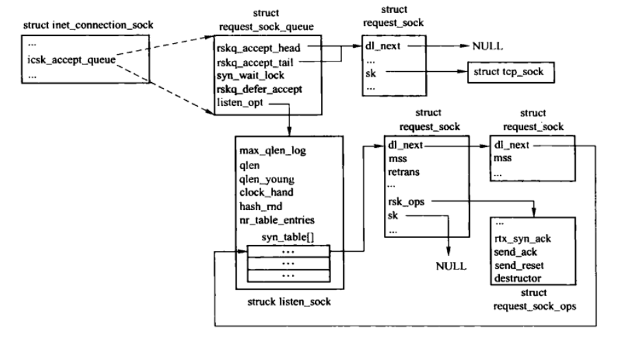
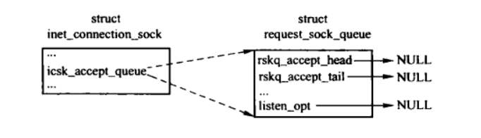
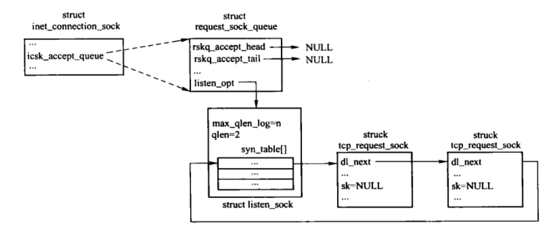
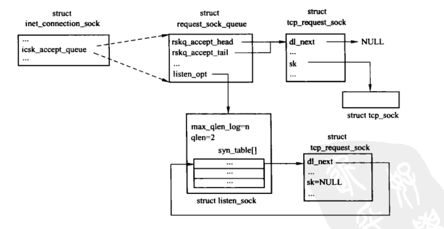
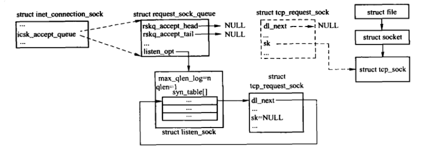
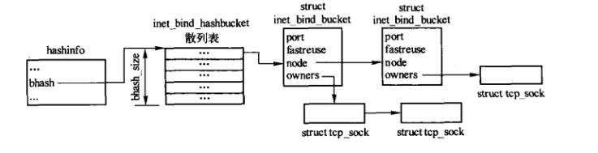
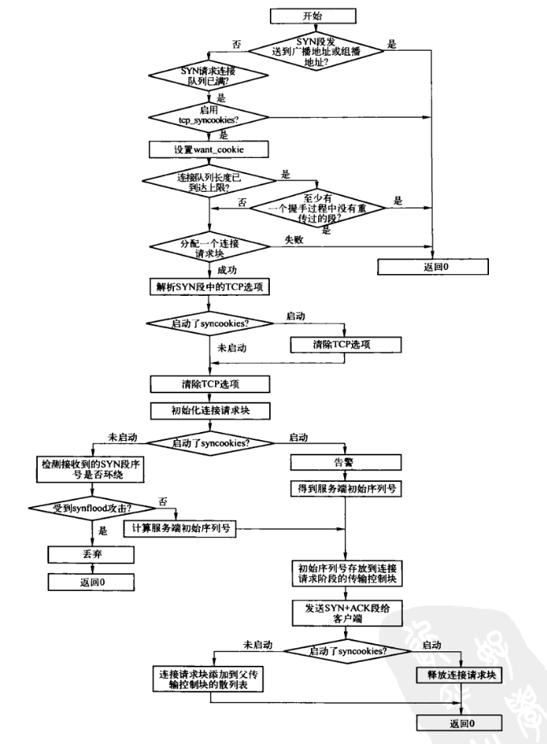

TCP连接的建立
Table of Contents
1. 服务端建立连接过程
建立TCP连接的过程：
- client发送SYN段，表示希望连接的服务器端口以及初始序号。
- server发送一个包含server段初始序号以及对client SYN段确认的 SYN+ACK段作为应答，SYN占用一个序号，因此确认序号设置为client初始序号加1。
- client发送确认序号为server初始序号加1的ACK段，对server的SYN段进行确认。
在TCP传输控制块 inet_connection_sock 结构中有个 request_sock_queue 结构类型的成员 icsk_accept_queue ，用来保存正在建立连接和已建立连接但未被accept的传输控制块。在request_sock_queue结构的rskq_accept_head 和 rskq_accept_tail 构成的链表中保存了已经我那成连接的连接请求块；在listen_sock结构实例的syn_table散列表中，保存着两个连接状态中的连接请求块，请求块之间使用dl_next形成链表。

Figure 1: 请求连接数据结构间的关系
虽然每个TCP传输控制块都有请求连接控制块 icsk_accept_queue，但最初创建时不完整，request_sock_queue结构的listen_opt指针为NULL，即还没有为保存SYN_RECV状态的请求连接控制块分配空间，如下图：

Figure 2: 不完整的连接请求队列结构
在调用listen系统调用时，使TCP进入LISTEN状态，同时还未保存SYN_RECV状态的请求连接控制块分配空间，其中syn_table散列表的大小油listen系统调用的参数backlog控制，分配后的结构如下图：
Figure 3: 初始化后的连接请求队列结构
listen调用后，套接口就可以接受新的连接了。当有客户端发送SYN段请求连接时，如果SYN合法，会为该连接请求创建连接请求块，并保存相应的信息（双方初始序号、启用的TCP选项等），这些信息由tcp_request_sock结构的描述。

Figure 4: 接收了2个未完成连接的连接请求
当服务端接收连接请求后，会建立相应的连接请求块，同时给对方发送SYN+ACK段作为回应。服务端再次收到客户端的ACK确认时，才会真正的为连接创建一个TCP传输控制块，并将其挂载到连接请求块的sk成员上，同时将该连接请求块移动到 rskq_accept_head 队列中，等待服务端accept调用，如下图：

Figure 5: 接收了2个连接请求（一个完成连接，等待accept）
调用accept系统调用时，从rskq_accept_head队列中取出请求传输控制块，与套接口相关联后释放该连接请求块，如下图，如果队列为空，则根据是否阻塞来决定是直接返回还是等待超时。

Figure 6: 接收了2个连接请求（完成的连接被取走）
2. 连接相关的数据结构
TCP连接的建立需要经过三次握手，服务端需要保存待建立连接的相关信息并控制连接，request_sock_queue等结构就是用来存储这些信息。
2.1. request_sock_queue结构
TCP传输控制块中，request_sock_queue 结构定义了用于存放连接请求块的容器，包括处于SYN_RECV状态以及已连接但还没被accept的传输控制块，inet_connection_sock结构中用成员 icsk_accept_queue 定义了该容器。
/** struct request_sock_queue - queue of request_socks * * @rskq_accept_head - FIFO head of established children * @rskq_accept_tail - FIFO tail of established children * @rskq_defer_accept - User waits for some data after accept() * @syn_wait_lock - serializer * * %syn_wait_lock is necessary only to avoid proc interface having to grab the main * lock sock while browsing the listening hash (otherwise it's deadlock prone). * * This lock is acquired in read mode only from listening_get_next() seq_file * op and it's acquired in write mode _only_ from code that is actively * changing rskq_accept_head. All readers that are holding the master sock lock * don't need to grab this lock in read mode too as rskq_accept_head. writes * are always protected from the main sock lock. */ struct request_sock_queue { //分别指向已完成连接链表的首部和尾部，listen_opt中的连接请求块连接后会移动到此链表，等待accept struct request_sock *rskq_accept_head; struct request_sock *rskq_accept_tail; //访问listen_opt以及listen_sock结构成员的同步控制读写锁 rwlock_t syn_wait_lock; //保存相关套接口TCP层的TCP_DEFER_ACCEPT选项的值。 u8 rskq_defer_accept; /*指向listen_sock结构的实例，在侦听时建立*/ struct listen_sock *listen_opt; };
2.2. listen_sock结构
listen_sock结构用来存储连接请求块，该结构的实例在listen系统调用后才会被创建，request_sock_queue结构的listen_opt成员指向该实例。
struct listen_sock { //实际分配用来保存SYN请求连接的request_sock结构数组的长度，其值为nr_table_entries以2为底的对数 u8 max_qlen_log; /* 当前连接请求块的数目 */ int qlen; //当前未重传过SYN+ACK段的请求块数目。 int qlen_young; /* 用来记录连接建立定时器处理函数下次被激活时徐处理的连接请求块散列表入口， 在本次处理 结束时将当前的入口保存到该字段，下次从该位置处理 */ int clock_hand; //用来计算SYN请求块散列表键值的随机数，该值在reqsk_queue_alloc()中随机生成 u32 hash_rnd; //实际分配用来保存syn请求连接的request_sock结构数组的长度 u32 nr_table_entries; //request_sock结构散列表，调用listen时生成 struct request_sock *syn_table[0]; };
2.3. tcp_request_sock结构
tcp_request_sock结构作为TCP连接请求块，用来保存双方的初始序号、双方的端口及IP地址、TCP选项，如是否支持窗口扩大因子、是否支持SACK等，并控制连接建立。
struct tcp_request_sock { struct inet_request_sock req; //客户端的初始序号，接收到客户端连接请求SYN段的序号 u32 rcv_isn; //服务端的初始序号，服务端发送SYN+ACK段的序号 u32 snt_isn; };
2.3.1. inet_request_sock
用来构成tcp_request_sock结构开头的部分，主要描述双方的地址、支持的TCP选项等。
struct inet_request_sock { struct request_sock req; u16 inet6_rsk_offset; /* 2 bytes hole, try to pack */ __be32 loc_addr;//本地IP地址 __be32 rmt_addr;//对端IP地址 __be16 rmt_port; //对端端口 //窗口扩大因子，将TCP首部指定的滑动窗口大小左移snd_wscale后才是真正的窗口大小。 u16 snd_wscale : 4, //接收窗口扩大因子 rcv_wscale : 4, //是否存在TCP时间戳选项 tstamp_ok : 1, //是否支持SACK，支持则可以出现在SYN段中。 sack_ok : 1, //是否支持窗口扩大因子，支持则可以出现在SYN段中。 wscale_ok : 1, //是否启用显式拥塞通知 ecn_ok : 1, //标识已经接收到第三次握手的ACK段，但是由于服务器的原因导致没能建立连接，可以根据该标志再次发送SYN+ACK,建立连接。 acked : 1; //指向IP选项数据结构 struct ip_options *opt; };
2.3.2. request_sock结构
该结构用来构成 inet_request_sock结构的起始部分，主要描述对端MSS、本段接收窗口大小及控制连接操作的信息。
/* struct request_sock - mini sock to represent a connection request */ struct request_sock { //将request_sock 结构实例连接链表 struct request_sock *dl_next; /* Must be first member! */ //客户端连接请求通告的MSS。没有通告则使用初始值（RFC建议536） u16 mss; //发送SYN+ACK段的次数。当达到限制时，取消连接操作 u8 retrans; u8 __pad; /* The following two fields can be easily recomputed I think -AK */ //本端最大通告窗口，在生成SYN+ACK时计算该值 u32 window_clamp; /* window clamp at creation time */ //连接建立时本端接收窗口的大小，在生成SYN+ACK时计算该值 u32 rcv_wnd; /* rcv_wnd offered first time */ //下一个将要发送ACK中的时间戳值。当一个包含最后发送ACK确认序号的段到达时，该段中的时间戳被保存在ts_recent中。 u32 ts_recent; //服务端接收到连接请求，并发送SYN+ACK段作为应答后，等待客户端确认的超时时间，超时后发送SYN+ACK，直到次数达到上限 unsigned long expires; //处理连接请求的函数指针表，tcp中指向tcp_request_sock_ops const struct request_sock_ops *rsk_ops; //指向对应状态的传输控制块，连接建立前无效，握手成功后会建立对应的传输控制块。 struct sock *sk; u32 secid; u32 peer_secid; };
2.4. request_sock_ops结构
request_sock_ops结构用来描述处理连接请求的函数指针表，包括用于发送SYN+ACK段、ACK段、RST段的函数。 该结构作为request_sock的成员，可以方便的通过连接请求块索引这些接口。TCP中指向tcp_request_sock_ops。
struct request_sock_ops { int family;//所属协议族 int obj_size; //tcp_request_sock结构的长度 struct kmem_cache *slab; //连接请求块的高速缓存slab //发送SYN+ACK段的函数指针（tcp_v4_send_synack()） int (*rtx_syn_ack)(struct sock *sk, struct request_sock *req, struct dst_entry *dst); //发送ACK段的函数指针（tcp_v4_reqsk_send_ack()） void (*send_ack)(struct sk_buff *skb, struct request_sock *req); //发送RST段的函数指针（tcp_v4_send_reset()） void (*send_reset)(struct sock *sk, struct sk_buff *skb); //析构函数，释放连接请求块时调用（tcp_v4_reqsk_destructor()） void (*destructor)(struct request_sock *req); };
3. bind系统调用
3.1. bind端口散列表
tcp中使用 inet_bind_hashbucket 散列表来管理已绑定端口。该散列表在TCP初始化时，根据ehash散列表的大小ehash_size调整创建，bind端口实例通过node成员连接在散列表中。

Figure 7: 已经bind端口的结构
- inet_bind_bucket_create()，用来在bind_bucket_cachep高速缓存中分配bind端口实例，设置后将其添加到inet_bind_hashbucket散列表。
- inet_bind_bucket_destory()，将指定的bind端口实例从inet_bind_hashbucket散列表中删除并释放。
3.2. 传输层接口实现
bind系统调用通过套接口层的inet_bind()函数跳转到tcp的接口函数 tcp_v4_get_port(), 最终调用 inet_csk_get_port()。
如果绑定的本地端口为0，则自动分配一个可用端口。
如果指定了端口号，则从已绑定的端口信息中查找，找到则该端口已被使用，如果不能复用，则bind失败；没有找到，则创建新的bind信息块，添加到散列表。
/* Obtain a reference to a local port for the given sock, * if snum is zero it means select any available local port. */ int inet_csk_get_port(struct inet_hashinfo *hashinfo, //tcp散列表管理结构实例 tcp_hashinfo struct sock *sk, unsigned short snum,//要绑定的端口号 int (*bind_conflict)(const struct sock *sk, const struct inet_bind_bucket *tb)) /* bind_conflict 函数指针，用来在指定端口信息块的传输控制块链表上查找是否存在与待绑定传输控制块冲突的传输控制块。tcp中使用 inet_csk_bind_conflict()。 冲突需要满足三个条件： 1. 传输控制块链表上的传输控制块与待绑定的传输控制块的数据包输出设备的索引号相等，或其中任何一个为0。 2. 两者之间任何一个都没有端口复用，或者链表上的传输控制块不处于TCP_LISTEN状态。 3. 两者的源地址相等，或者任何一个源地址为0。 */ { struct inet_bind_hashbucket *head; struct hlist_node *node; struct inet_bind_bucket *tb; int ret; //禁止下半部，保证进程和下半部之间同步。因为后续操作中有些数据可能被进程和下半部同时访问。 local_bh_disable(); if (!snum) { //端口为0，表示没有指定端口，进行分配 int low = sysctl_local_port_range[0]; //自动分配端口的区间 int high = sysctl_local_port_range[1]; int remaining = (high - low) + 1; //分配端口的重试次数 int rover = net_random() % (high - low) + low; //生成区间内的随机端口号 do { //先根据端口获取hash值对应的端口链表 head = &hashinfo->bhash[inet_bhashfn(rover, hashinfo->bhash_size)]; spin_lock(&head->lock); //加锁准备遍历 inet_bind_bucket_for_each(tb, node, &head->chain) if (tb->port == rover) //端口已被使用 goto next; break; next: spin_unlock(&head->lock); if (++rover > high) //端口加1是否超过区间 rover = low; } while (--remaining > 0); //重试次数递减 /* Exhausted local port range during search? It is not * possible for us to be holding one of the bind hash * locks if this test triggers, because if 'remaining' * drops to zero, we broke out of the do/while loop at * the top level, not from the 'break;' statement. */ ret = 1; if (remaining <= 0) //重试次数用完，则获取端口失败 goto fail; /* OK, here is the one we will use. HEAD is * non-NULL and we hold it's mutex. */ snum = rover; } else { //指定了端口号 head = &hashinfo->bhash[inet_bhashfn(snum, hashinfo->bhash_size)]; spin_lock(&head->lock); inet_bind_bucket_for_each(tb, node, &head->chain) if (tb->port == snum) //端口已经被使用 goto tb_found; } tb = NULL; goto tb_not_found; tb_found: if (!hlist_empty(&tb->owners)) { //是否有对应的传输控制块（是否有进程在使用） if (sk->sk_reuse > 1) //可以强制复用端口 goto success; if (tb->fastreuse > 0 && //可以被复用 sk->sk_reuse && sk->sk_state != TCP_LISTEN) {//传输控制块可复用端口且不处于 TCP_LISTEN状态 goto success; } else { ret = 1; if (bind_conflict(sk, tb)) //检测复用端口是否冲突 goto fail_unlock; } } tb_not_found: //端口没有被使用，则创建绑定端口信息 ret = 1; if (!tb && (tb = inet_bind_bucket_create(hashinfo->bind_bucket_cachep, head, snum)) == NULL) goto fail_unlock; if (hlist_empty(&tb->owners)) { //端口还没有被绑定 if (sk->sk_reuse && sk->sk_state != TCP_LISTEN) //传输控制块允许复用端口 tb->fastreuse = 1; else tb->fastreuse = 0; } else if (tb->fastreuse && //端口已被绑定 (!sk->sk_reuse || sk->sk_state == TCP_LISTEN)) //传输控制块不允许复用端口，或者处于TCP_LISTEN tb->fastreuse = 0; success: if (!inet_csk(sk)->icsk_bind_hash) inet_bind_hash(sk, tb, snum); //完成传输控制块和端口的绑定 BUG_TRAP(inet_csk(sk)->icsk_bind_hash == tb); ret = 0; fail_unlock: spin_unlock(&head->lock); fail: local_bh_enable(); return ret; }
4. listen系统调用
4.1. inet_listen()
inet_listen()函数是listen系统调用的套接口层实现。
/* * Move a socket into listening state. */ int inet_listen(struct socket *sock, int backlog) { struct sock *sk = sock->sk; unsigned char old_state; int err; lock_sock(sk); err = -EINVAL; if (sock->state != SS_UNCONNECTED || sock->type != SOCK_STREAM) goto out; old_state = sk->sk_state; if (!((1 << old_state) & (TCPF_CLOSE | TCPF_LISTEN))) goto out; /* Really, if the socket is already in listen state * we can only allow the backlog to be adjusted. */ if (old_state != TCP_LISTEN) { //进行监听操作 err = inet_csk_listen_start(sk, backlog); if (err) goto out; } sk->sk_max_ack_backlog = backlog; err = 0; out: release_sock(sk); return err; }
4.2. inet_csk_listen_start监听操作
inet_csk_listen_start() 函数使TCP传输控制块进入监听状态。
监听过程：
- 为管理连接请求块的散列表分配存储空间
- 将TCP传输控制块迁移到LISTEN状态
- 将传输控制块添加到监听散列表
int inet_csk_listen_start(struct sock *sk, const int nr_table_entries/*连接队列长度上限*/) { struct inet_sock *inet = inet_sk(sk); struct inet_connection_sock *icsk = inet_csk(sk); int rc = reqsk_queue_alloc(&icsk->icsk_accept_queue, nr_table_entries); if (rc != 0) return rc; sk->sk_max_ack_backlog = 0; sk->sk_ack_backlog = 0; inet_csk_delack_init(sk); //初始化 延时发送ACK段相关的数据结构 /* There is race window here: we announce ourselves listening, * but this transition is still not validated by get_port(). * It is OK, because this socket enters to hash table only * after validation is complete. */ sk->sk_state = TCP_LISTEN; if (!sk->sk_prot->get_port(sk, inet->num)) { //进行绑定端口的操作 inet->sport = htons(inet->num); sk_dst_reset(sk); //清除传输控制块的目的路由缓存 sk->sk_prot->hash(sk); //添加至散列表 return 0; } sk->sk_state = TCP_CLOSE; __reqsk_queue_destroy(&icsk->icsk_accept_queue); return -EADDRINUSE; }
4.3. 分配连接请求块散列表：reqsk_queue_alloc()
int reqsk_queue_alloc(struct request_sock_queue *queue, unsigned int nr_table_entries) { size_t lopt_size = sizeof(struct listen_sock); struct listen_sock *lopt; //计算用于保存SYN请求连接的 request_sock 结构的数组长度 nr_table_entries = min_t(u32, nr_table_entries, sysctl_max_syn_backlog); nr_table_entries = max_t(u32, nr_table_entries, 8); //确保 nr_table_entries 的值为 2^n nr_table_entries = roundup_pow_of_two(nr_table_entries + 1); lopt_size += nr_table_entries * sizeof(struct request_sock *); if (lopt_size > PAGE_SIZE) //大于一个页面，则使用 __vmalloc lopt = __vmalloc(lopt_size, GFP_KERNEL | __GFP_HIGHMEM | __GFP_ZERO, PAGE_KERNEL); else lopt = kzalloc(lopt_size, GFP_KERNEL); if (lopt == NULL) return -ENOMEM; //nr_table_entries 的值为 2^n ，计算n值 max_qlen_log for (lopt->max_qlen_log = 3; (1 << lopt->max_qlen_log) < nr_table_entries; lopt->max_qlen_log++); //初始化listen_sock结构的成员 get_random_bytes(&lopt->hash_rnd, sizeof(lopt->hash_rnd)); rwlock_init(&queue->syn_wait_lock); queue->rskq_accept_head = NULL; lopt->nr_table_entries = nr_table_entries; write_lock_bh(&queue->syn_wait_lock); queue->listen_opt = lopt; write_unlock_bh(&queue->syn_wait_lock); return 0; }
5. accept系统调用
5.1. inet_accept()
该函数是accept系统调用的套接口层实现。
/* * Accept a pending connection. The TCP layer now gives BSD semantics. */ int inet_accept(struct socket *sock, struct socket *newsock, int flags) { struct sock *sk1 = sock->sk; //获取套接口的传输控制块 int err = -EINVAL; //调用传输层接口的实现函数 inet_csk_accept()，来获取已完成连接的传输控制块 struct sock *sk2 = sk1->sk_prot->accept(sk1, flags, &err); if (!sk2) goto do_err; lock_sock(sk2); BUG_TRAP((1 << sk2->sk_state) & (TCPF_ESTABLISHED | TCPF_CLOSE_WAIT | TCPF_CLOSE)); //将已经连接的传输控制块和套接口进行关联。 sock_graft(sk2, newsock); newsock->state = SS_CONNECTED; err = 0; release_sock(sk2); do_err: return err; }
5.2. 传输层的接口实现：inet_csk_accept()
该函数获取已经完成连接的传输控制块。
/* * This will accept the next outstanding connection. */ struct sock *inet_csk_accept(struct sock *sk, int flags, int *err) { struct inet_connection_sock *icsk = inet_csk(sk); struct sock *newsk; int error; lock_sock(sk); /* We need to make sure that this socket is listening, * and that it has something pending. */ error = -EINVAL; if (sk->sk_state != TCP_LISTEN) //只有监听的套接字才可以进行accept操作 goto out_err; /* Find already established connection */ if (reqsk_queue_empty(&icsk->icsk_accept_queue)) { //队列为空，则没有新连接 long timeo = sock_rcvtimeo(sk, flags & O_NONBLOCK); /* If this is a non blocking socket don't sleep */ error = -EAGAIN; if (!timeo) //没有指定timeout,则直接返回 goto out_err; //在超时时间内等待新连接 error = inet_csk_wait_for_connect(sk, timeo); if (error) goto out_err; } //队列中有新连接，则获取新连接的传输控制块 newsk = reqsk_queue_get_child(&icsk->icsk_accept_queue, sk); BUG_TRAP(newsk->sk_state != TCP_SYN_RECV); out: release_sock(sk); return newsk; out_err: newsk = NULL; *err = error; goto out; }
5.2.1. 等待新建的连接：inet_csk_wait_for_connect
该函数用于在超时时间内等待新的连接，直到有新连接，或者超时，或者收到信号等。
/* * Wait for an incoming connection, avoid race conditions. This must be called * with the socket locked. */ static int inet_csk_wait_for_connect(struct sock *sk, long timeo) { struct inet_connection_sock *icsk = inet_csk(sk); DEFINE_WAIT(wait); int err; /* * True wake-one mechanism for incoming connections: only * one process gets woken up, not the 'whole herd'. * Since we do not 'race & poll' for established sockets * anymore, the common case will execute the loop only once. * * Subtle issue: "add_wait_queue_exclusive()" will be added * after any current non-exclusive waiters, and we know that * it will always _stay_ after any new non-exclusive waiters * because all non-exclusive waiters are added at the * beginning of the wait-queue. As such, it's ok to "drop" * our exclusiveness temporarily when we get woken up without * having to remove and re-insert us on the wait queue. */ for (;;) { prepare_to_wait_exclusive(sk->sk_sleep, &wait, TASK_INTERRUPTIBLE); release_sock(sk); if (reqsk_queue_empty(&icsk->icsk_accept_queue)) timeo = schedule_timeout(timeo); lock_sock(sk); err = 0; if (!reqsk_queue_empty(&icsk->icsk_accept_queue)) break; err = -EINVAL; if (sk->sk_state != TCP_LISTEN) break; err = sock_intr_errno(timeo); if (signal_pending(current)) break; err = -EAGAIN; if (!timeo) break; } finish_wait(sk->sk_sleep, &wait); return err; }
5.2.2. 获取已建立的连接：reqsk_queue_get_child
该函数从已连接队列上取走第一个连接请求块，然后由该连接请求块获得已经创建的子传输请求块，之后释放已完成建立连接的连接请求块，同时更新父传输控制块上已建立连接的数目，最后返回子传输控制块。
static inline struct sock *reqsk_queue_get_child(struct request_sock_queue *queue, struct sock *parent) { struct request_sock *req = reqsk_queue_remove(queue); struct sock *child = req->sk; BUG_TRAP(child != NULL); sk_acceptq_removed(parent); __reqsk_free(req); return child; }
6. 被动打开
6.1. SYN cookies
TCP协议为亲求连接队列开辟了一个较大的内存空间，当SYN请求不断增加致使请求连接数目达到上限时，内核会丢弃SYN连接请求。 SYN cookies技术可以使服务器在半连接队列已满的情况下仍能处理新的SYN请求。
当半连接队列满时，SYN cookies并不丢弃SYN请求，而是通过加密技术来标识半连接状态。在TCP实现中，当收到客户端的SYN请求时，服务器需回复SYN+ACK给客户端，之后客户端发送确认。 通常，服务器的初始序列号由服务器按照一定的规律计算得到，或者采用随机数。在SYN cookies中，服务器的初始序号由客户端的IP地址、客户端端口、服务器IP地址和服务器端口、接收到客户端初始序列号以及其他一些安全数值进行hash运算，并进行加密后得到cookie。当服务器遭受SYN攻击导致请求连接队列满时，服务器不会拒绝新的SYN，而是回复初始序列号为cookie的SYN包，如果收到客户端的ACK段，则服务端将ACK序号减1后的值 和上述要素计算的hash值比较，相等则直接完成握手，注意： 此时不必查看此连接是否属于请求连接队列。
启用SYN coolies可以通过一下命令：
# echo 1 > /proc/sys/net/ipv4/tcp_syncookies
6.2. 第一次握手：接收SYN段
6.2.1. LISTEN状态处理TCP段
传输控制块接收处理的段都由 tcp_v4_do_rcv() 函数处理，该函数中，再根据不同状态调用不同函数： ESTABLISHED状态的处理函数为 tcp_rcv_established()，LISTEN状态且已建立半连接的处理函数为 tcp_v4_hnd_req()，其他状态处理函数为 tcp_rcv_state_process()。
/* The socket must have it's spinlock held when we get * here. * * We have a potential double-lock case here, so even when * doing backlog processing we use the BH locking scheme. * This is because we cannot sleep with the original spinlock * held. */ int tcp_v4_do_rcv(struct sock *sk, struct sk_buff *skb) { struct sock *rsk; //...... if (sk->sk_state == TCP_LISTEN) { struct sock *nsk = tcp_v4_hnd_req(sk, skb); if (!nsk) goto discard; if (nsk != sk) { if (tcp_child_process(sk, nsk, skb)) { rsk = nsk; goto reset; } return 0; } } //除了 ESTABLISHED状态和 LISTEN状态且已经建立半连接 状态之外的处理。 TCP_CHECK_TIMER(sk); if (tcp_rcv_state_process(sk, skb, skb->h.th, skb->len)) { rsk = sk; goto reset; } TCP_CHECK_TIMER(sk); return 0; //...... }
6.2.2. LISTEN状态处理SYN段
服务端处理第一次握手的函数是 tcp_rcv_state_process()。
/* * This function implements the receiving procedure of RFC 793 for * all states except ESTABLISHED and TIME_WAIT. * It's called from both tcp_v4_rcv and tcp_v6_rcv and should be * address independent. */ int tcp_rcv_state_process(struct sock *sk /*处理该TCP段的传输控制块*/, struct sk_buff *skb, //接收到的TCP段 struct tcphdr *th/*tcp首部*/, unsigned len/*tcp段长度*/) { struct tcp_sock *tp = tcp_sk(sk); struct inet_connection_sock *icsk = inet_csk(sk); int queued = 0; tp->rx_opt.saw_tstamp = 0; switch (sk->sk_state) { case TCP_CLOSE: goto discard; case TCP_LISTEN: //还未建立半连接的LISTEN状态下，之处理SYN段 if(th->ack) return 1; if(th->rst) goto discard; if(th->syn) { //处理SYN段，tcp中为 tcp_v4_conn_request() if (icsk->icsk_af_ops->conn_request(sk, skb) < 0) return 1; /* Now we have several options: In theory there is * nothing else in the frame. KA9Q has an option to * send data with the syn, BSD accepts data with the * syn up to the [to be] advertised window and * Solaris 2.1 gives you a protocol error. For now * we just ignore it, that fits the spec precisely * and avoids incompatibilities. It would be nice in * future to drop through and process the data. * * Now that TTCP is starting to be used we ought to * queue this data. * But, this leaves one open to an easy denial of * service attack, and SYN cookies can't defend * against this problem. So, we drop the data * in the interest of security over speed unless * it's still in use. */ kfree_skb(skb); return 0; } goto discard; //...... } //...... }
6.2.3. 连接请求处理：tcp_v4_conn_request
tcp_v4_conn_request()是服务端用来处理客户端连接请求的函数。

Figure 8: tcp_v4_conn_request()流程图
int tcp_v4_conn_request(struct sock *sk, struct sk_buff *skb) { struct inet_request_sock *ireq; struct tcp_options_received tmp_opt; struct request_sock *req; __be32 saddr = skb->nh.iph->saddr; __be32 daddr = skb->nh.iph->daddr; __u32 isn = TCP_SKB_CB(skb)->when; struct dst_entry *dst = NULL; #ifdef CONFIG_SYN_COOKIES int want_cookie = 0; #else #define want_cookie 0 /* Argh, why doesn't gcc optimize this :( */ #endif /* 如果SYN段是发送广播或者组播地址，直接丢弃，不处理 */ if (((struct rtable *)skb->dst)->rt_flags & (RTCF_BROADCAST | RTCF_MULTICAST)) goto drop; /* 如果SYN请求连接队列已满，并且 isn为0，则需要判断是否启用了syncookies */ if (inet_csk_reqsk_queue_is_full(sk) && !isn) { if (sysctl_tcp_syncookies) {//启用了syncookies want_cookie = 1; } else goto drop; } /* 连接队列长度达到上限，并且SYN请求队列中至少有一个握手过程中没有重传过的段，则丢弃当前连接请求*/ if (sk_acceptq_is_full(sk) && inet_csk_reqsk_queue_young(sk) > 1) goto drop; //分配连接请求块 req = reqsk_alloc(&tcp_request_sock_ops); if (!req) goto drop; #ifdef CONFIG_TCP_MD5SIG //TCP MD5签名来保护BGP会话 tcp_rsk(req)->af_specific = &tcp_request_sock_ipv4_ops; #endif //清除TCP选项，并初始化 tcp_clear_options(&tmp_opt); tmp_opt.mss_clamp = 536; tmp_opt.user_mss = tcp_sk(sk)->rx_opt.user_mss; //解析SYN段的TCP选项 tcp_parse_options(skb, &tmp_opt, 0); if (want_cookie) {//如果启用了syncookies,则清除已解析的TCP选项 tcp_clear_options(&tmp_opt); tmp_opt.saw_tstamp = 0; } //存在时间戳选项，但时间戳的值为0 if (tmp_opt.saw_tstamp && !tmp_opt.rcv_tsval) { /* Some OSes (unknown ones, but I see them on web server, which * contains information interesting only for windows' * users) do not send their stamp in SYN. It is easy case. * We simply do not advertise TS support. */ tmp_opt.saw_tstamp = 0; tmp_opt.tstamp_ok = 0; } tmp_opt.tstamp_ok = tmp_opt.saw_tstamp; //根据收到的SYN段中的选项和序号来初始化连接请求块信息 tcp_openreq_init(req, &tmp_opt, skb); //安全检测 if (security_inet_conn_request(sk, skb, req)) goto drop_and_free; //初始化连接请求块，地址，IP选项（MSS、窗口扩大银子、显式拥塞通知等） ireq = inet_rsk(req); ireq->loc_addr = daddr; ireq->rmt_addr = saddr; ireq->opt = tcp_v4_save_options(sk, skb); if (!want_cookie) TCP_ECN_create_request(req, skb->h.th); if (want_cookie) {//启动了syncookies,则每60s警告一次可能受到synflood攻击 #ifdef CONFIG_SYN_COOKIES syn_flood_warning(skb); #endif //根据四元组、客户端初始序列号等要素进行hash元算得到服务端初始序列号 isn = cookie_v4_init_sequence(sk, skb, &req->mss); } else if (!isn) { struct inet_peer *peer = NULL; /* VJ's idea. We save last timestamp seen * from the destination in peer table, when entering * state TIME-WAIT, and check against it before * accepting new connection request. * * If "isn" is not zero, this request hit alive * timewait bucket, so that all the necessary checks * are made in the function processing timewait state. */ //进入TIMEWAIT状态时，从对端信息块中获取时间戳，在新的连接请求之前检测PAWS。 if (tmp_opt.saw_tstamp && tcp_death_row.sysctl_tw_recycle && (dst = inet_csk_route_req(sk, req)) != NULL && (peer = rt_get_peer((struct rtable *)dst)) != NULL && peer->v4daddr == saddr) { if (xtime.tv_sec < peer->tcp_ts_stamp + TCP_PAWS_MSL && (s32)(peer->tcp_ts - req->ts_recent) > TCP_PAWS_WINDOW) { NET_INC_STATS_BH(LINUX_MIB_PAWSPASSIVEREJECTED); dst_release(dst); goto drop_and_free; } } /* 未启用syncookies时，受到synflood，则丢弃 */ else if (!sysctl_tcp_syncookies && (sysctl_max_syn_backlog - inet_csk_reqsk_queue_len(sk) < (sysctl_max_syn_backlog >> 2)) && (!peer || !peer->tcp_ts_stamp) && (!dst || !dst_metric(dst, RTAX_RTT))) { /* Without syncookies last quarter of * backlog is filled with destinations, * proven to be alive. * It means that we continue to communicate * to destinations, already remembered * to the moment of synflood. */ LIMIT_NETDEBUG(KERN_DEBUG "TCP: drop open " "request from %u.%u.%u.%u/%u\n", NIPQUAD(saddr), ntohs(skb->h.th->source)); dst_release(dst); goto drop_and_free; } //通过四元组计算服务端的初始序列号 isn = tcp_v4_init_sequence(skb); } tcp_rsk(req)->snt_isn = isn; //将计算的初始序列号存放到连接请求阶段的传输控制块中 //发送SYN+ACK if (tcp_v4_send_synack(sk, req, dst)) goto drop_and_free; if (want_cookie) { reqsk_free(req); } else {//没有启用syncookies时，需要将连接请求块保存到其父传输控制块中的散列表中 inet_csk_reqsk_queue_hash_add(sk, req, TCP_TIMEOUT_INIT); } return 0; drop_and_free: reqsk_free(req); drop: return 0; }
6.2.4. 从SKB的控制块中获取IP选项：tcp_v4_save_options()
tcp_v4_save_options()根据IP选项的长度分配ip_options结构的实例，之后调用ip_option_echo()从SKB的控制块中获取IP选项到该实例中。
6.2.5. 将连接请求块保存到父传输控制块的散列表中
inet_csk_reqsk_queue_hash_add()函数用来将连接请求块保存到父传输控制块的散列表中。
void inet_csk_reqsk_queue_hash_add(struct sock *sk, struct request_sock *req, unsigned long timeout) { struct inet_connection_sock *icsk = inet_csk(sk); struct listen_sock *lopt = icsk->icsk_accept_queue.listen_opt; const u32 h = inet_synq_hash(inet_rsk(req)->rmt_addr, inet_rsk(req)->rmt_port, lopt->hash_rnd, lopt->nr_table_entries); reqsk_queue_hash_req(&icsk->icsk_accept_queue, h, req, timeout); inet_csk_reqsk_queue_added(sk, timeout); }
6.2.6. 更新该传输控制块上已请求连接块的数量
inet_csk_reqsk_queue_added()
static inline void inet_csk_reqsk_queue_added(struct sock *sk, const unsigned long timeout) { //如果是首次接收请求连接，则需要复位并启动保活定时器 if (reqsk_queue_added(&inet_csk(sk)->icsk_accept_queue) == 0) inet_csk_reset_keepalive_timer(sk, timeout); }
6.2.7. 函数调用关系
tcp_v4_do_rcv()
tcp_rcv_state_process
icsk->icsk_af_ops->conn_request(sk, skb) ==> tcp_v4_conn_request()
tcp_v4_save_options
tcp_v4_send_synack
tcp_make_synack
ip_build_and_send_pkt
inet_csk_reqsk_queue_hash_add
6.3. 第二次握手：发送SYN+ACK段
6.3.1. 构造并发送SYN+ACK段
tcp_v4_send_synack()用来为服务端构造回应客户端连接请求SYN段的SYN+ACK段，并将其封装在IP数据包中发送给客户端。
/* * Send a SYN-ACK after having received an ACK. * This still operates on a request_sock only, not on a big * socket. */ static int tcp_v4_send_synack(struct sock *sk, struct request_sock *req, struct dst_entry *dst) { const struct inet_request_sock *ireq = inet_rsk(req); int err = -1; struct sk_buff * skb; /* 查找路由 */ if (!dst && (dst = inet_csk_route_req(sk, req)) == NULL) goto out; //根据查找的路由、传输控制块、连接请求块的信息来构建SYN+ACK段 skb = tcp_make_synack(sk, dst, req); if (skb) { struct tcphdr *th = skb->h.th; //生成tcp校验码 th->check = tcp_v4_check(th, skb->len, ireq->loc_addr, ireq->rmt_addr, csum_partial((char *)th, skb->len, skb->csum)); //生成IP数据报并发送 err = ip_build_and_send_pkt(skb, sk, ireq->loc_addr, ireq->rmt_addr, ireq->opt); err = net_xmit_eval(err); } out: dst_release(dst); return err; }
6.3.2. 获取路由入口
inet_csk_route_req()用来根据连接请求块和服务端传输控制块中的信息（输出网络设备、源目的地址、源目的端口等），为SYN+ACK段查询路由入口。
struct dst_entry* inet_csk_route_req(struct sock *sk, const struct request_sock *req)//连接请求块 { struct rtable *rt; const struct inet_request_sock *ireq = inet_rsk(req); struct ip_options *opt = inet_rsk(req)->opt; //定义并初始化用于路由查询的条件组合 struct flowi fl = { .oif = sk->sk_bound_dev_if, .nl_u = { .ip4_u = { .daddr = ((opt && opt->srr) ? opt->faddr : ireq->rmt_addr), .saddr = ireq->loc_addr, .tos = RT_CONN_FLAGS(sk) } }, .proto = sk->sk_protocol, .uli_u = { .ports = { .sport = inet_sk(sk)->sport, .dport = ireq->rmt_port } } }; security_req_classify_flow(req, &fl); //查询路由缓存项 if (ip_route_output_flow(&rt, &fl, sk, 0)) { IP_INC_STATS_BH(IPSTATS_MIB_OUTNOROUTES); return NULL; } //如果IP首部中包含严格源路由选项，并且选项中获取的下一跳和查询的路由不匹配，则路由失败 if (opt && opt->is_strictroute && rt->rt_dst != rt->rt_gateway) { ip_rt_put(rt); IP_INC_STATS_BH(IPSTATS_MIB_OUTNOROUTES); return NULL; } return &rt->u.dst; }
6.3.3. 构造SYN+ACK段
tcp_make_synack()用来构造一个SYN+ACK段，并初始化TCP首部及SKB中的各字段，例如MSS、SACK、窗口扩大因子、时间戳等。
/* * Prepare a SYN-ACK. */ struct sk_buff * tcp_make_synack(struct sock *sk, struct dst_entry *dst, struct request_sock *req) { struct inet_request_sock *ireq = inet_rsk(req); struct tcp_sock *tp = tcp_sk(sk); struct tcphdr *th; int tcp_header_size; struct sk_buff *skb; #ifdef CONFIG_TCP_MD5SIG struct tcp_md5sig_key *md5; __u8 *md5_hash_location; #endif //为SYN+ACK分配SKB（强制分配） skb = sock_wmalloc(sk, MAX_TCP_HEADER + 15, 1, GFP_ATOMIC); if (skb == NULL) return NULL; /* 为MAC层、IP层、TCP首部预留空间 */ skb_reserve(skb, MAX_TCP_HEADER); skb->dst = dst_clone(dst); //根据接收的SYN段中的选项计算SYN+ACK段的TCP首部长度 tcp_header_size = (sizeof(struct tcphdr) + TCPOLEN_MSS + (ireq->tstamp_ok ? TCPOLEN_TSTAMP_ALIGNED : 0) + (ireq->wscale_ok ? TCPOLEN_WSCALE_ALIGNED : 0) + /* SACK_PERM is in the place of NOP NOP of TS */ ((ireq->sack_ok && !ireq->tstamp_ok) ? TCPOLEN_SACKPERM_ALIGNED : 0)); #ifdef CONFIG_TCP_MD5SIG /* Are we doing MD5 on this segment? If so - make room for it */ md5 = tcp_rsk(req)->af_specific->md5_lookup(sk, req); if (md5) tcp_header_size += TCPOLEN_MD5SIG_ALIGNED; #endif skb->h.th = th = (struct tcphdr *) skb_push(skb, tcp_header_size); memset(th, 0, sizeof(struct tcphdr)); th->syn = 1; th->ack = 1; TCP_ECN_make_synack(req, th); th->source = inet_sk(sk)->sport; th->dest = ireq->rmt_port; TCP_SKB_CB(skb)->seq = tcp_rsk(req)->snt_isn; TCP_SKB_CB(skb)->end_seq = TCP_SKB_CB(skb)->seq + 1; TCP_SKB_CB(skb)->sacked = 0; skb_shinfo(skb)->gso_segs = 1; skb_shinfo(skb)->gso_size = 0; skb_shinfo(skb)->gso_type = 0; th->seq = htonl(TCP_SKB_CB(skb)->seq); th->ack_seq = htonl(tcp_rsk(req)->rcv_isn + 1); if (req->rcv_wnd == 0) { /* ignored for retransmitted syns */ __u8 rcv_wscale; /* Set this up on the first call only */ /* 根据路由项中获取的最大通告窗口，初始化请求块中的最大通告窗口 */ req->window_clamp = tp->window_clamp ? : dst_metric(dst, RTAX_WINDOW); /* 设置接收窗口、最大通告窗口、窗口扩大因子等 */ tcp_select_initial_window(tcp_full_space(sk), dst_metric(dst, RTAX_ADVMSS) - (ireq->tstamp_ok ? TCPOLEN_TSTAMP_ALIGNED : 0), &req->rcv_wnd, &req->window_clamp, ireq->wscale_ok, &rcv_wscale); ireq->rcv_wscale = rcv_wscale; } /* RFC1323: The window in SYN & SYN/ACK segments is never scaled. */ //设置SYN+ACK段的窗口大小 th->window = htons(req->rcv_wnd); //设置SKB的TCP控制块的发送时间 TCP_SKB_CB(skb)->when = tcp_time_stamp; //生成SYN+ACK段的选项 tcp_syn_build_options((__be32 *)(th + 1), dst_metric(dst, RTAX_ADVMSS), ireq->tstamp_ok, ireq->sack_ok, ireq->wscale_ok, ireq->rcv_wscale, TCP_SKB_CB(skb)->when, req->ts_recent, ( #ifdef CONFIG_TCP_MD5SIG md5 ? &md5_hash_location : #endif NULL) ); skb->csum = 0; th->doff = (tcp_header_size >> 2); //设置TCP首部长度 TCP_INC_STATS(TCP_MIB_OUTSEGS); #ifdef CONFIG_TCP_MD5SIG /* Okay, we have all we need - do the md5 hash if needed */ if (md5) { tp->af_specific->calc_md5_hash(md5_hash_location, md5, NULL, dst, req, skb->h.th, sk->sk_protocol, skb->len); } #endif return skb; }
6.4. 第三次握手：接收ACK段
服务端收到SYN段后，会创建一个连接请求块，同时发送SYN+ACK段给客户端作为回应，然后启动建立连接定时器，等待客户端最后一次握手的ACK段。
6.4.1. LISTEN状态处理TCP段
LISTEN状态下，已建立半连接的连接请求块，接收到第三次握手的ACK段后的处理过程：
int tcp_v4_do_rcv(struct sock *sk, struct sk_buff *skb) { //...... if (sk->sk_state == TCP_LISTEN) { struct sock *nsk = tcp_v4_hnd_req(sk, skb); //处理三次握手的最后一次ACK段 if (!nsk) goto discard; if (nsk != sk) { //如果返回的传输控制块不是侦听传输控制块，则说明连接建立成功 if (tcp_child_process(sk, nsk, skb)) { //初始化子传输控制块，如果失败，则发送RST段。 rsk = nsk; goto reset; } return 0; } } //...... }
6.4.2. 处理第三次握手的ACK段
tcp_v4_hnd_req()用来处理三次握手的最后一个ACK段，处理过程如下：
- 在请求连接散列表中查找对应的连接请求块。
- 如果找到，则根据TCP段标志，ACK或RST或SYN，作相应的处理，如果是ACK,则完成连接的建立。
- 如果没有找到，则需要在ehash散列表中查找对应的传输控制块，并作相应的处理。如果还找不到，则由tcp_rcv_state_process()处理。
static struct sock *tcp_v4_hnd_req(struct sock *sk, struct sk_buff *skb) { struct tcphdr *th = skb->h.th; struct iphdr *iph = skb->nh.iph; struct sock *nsk; struct request_sock **prev; /* 查找连接请求块 */ struct request_sock *req = inet_csk_search_req(sk, &prev, th->source, iph->saddr, iph->daddr); if (req) //找到，则说明前两次握手完成，处理最后一次的ACK段 return tcp_check_req(sk, skb, req, prev); //如果传输控制块不在连接请求散列表中，则可能在ehash散列表，继续查找 nsk = inet_lookup_established(&tcp_hashinfo, skb->nh.iph->saddr, th->source, skb->nh.iph->daddr, th->dest, inet_iif(skb)); if (nsk) { //查找成功，且不处于TIME_WAIT状态，则返回该传输控制块 if (nsk->sk_state != TCP_TIME_WAIT) { bh_lock_sock(nsk); return nsk; } inet_twsk_put(inet_twsk(nsk)); return NULL; } #ifdef CONFIG_SYN_COOKIES if (!th->rst && !th->syn && th->ack) //如果启用了syncookies，则检测是否是通过syncookies握手 /* 将客户端的ACK序列号减1得到cookie指，并根据要素进行hash运算后和cookie值比较 */ sk = cookie_v4_check(sk, skb, &(IPCB(skb)->opt)); #endif return sk; }
6.4.3. 在SYN_RECV状态下处理TCP段
在SYN_RECV状态下的传输控制块（连接请求块）用 tcp_check_req()来处理接收到的TCP段。处理过程如下：
- 解析并获取段中的TCP选项。
- 校验TCP序号。
- 如果是SYN段，则作为SYN段在处理一次。
- 检测ACK段确认序号是否有效，无效则立即返回不做处理。
- 检测ACK段序号是否有效，无效则丢弃。
- 如果是RST段或者新的SYN段，则向客户端发送RST段进行复位。
- 校验通过，创建对应的子传输控制块。
- 将连接请求块插入已完成连接的队列中，等待用户进程的accept()调用。
/* * Process an incoming packet for SYN_RECV sockets represented * as a request_sock. */ struct sock *tcp_check_req(struct sock *sk,struct sk_buff *skb, struct request_sock *req, struct request_sock **prev) { struct tcphdr *th = skb->h.th; __be32 flg = tcp_flag_word(th) & (TCP_FLAG_RST|TCP_FLAG_SYN|TCP_FLAG_ACK); int paws_reject = 0; struct tcp_options_received tmp_opt; struct sock *child; tmp_opt.saw_tstamp = 0; //如果TCP首部长度大于不带TCP选项的首部长度，则说明首部中有TCP选项 if (th->doff > (sizeof(struct tcphdr)>>2)) { tcp_parse_options(skb, &tmp_opt, 0); //解析TCP选项 if (tmp_opt.saw_tstamp) {//选项中带有时间戳，则记录该时间戳及其有效时间 tmp_opt.ts_recent = req->ts_recent; /* We do not store true stamp, but it is not required, * it can be estimated (approximately) * from another data. */ tmp_opt.ts_recent_stamp = xtime.tv_sec - ((TCP_TIMEOUT_INIT/HZ)<<req->retrans); paws_reject = tcp_paws_check(&tmp_opt, th->rst); //校验TCP序号是否有效 } } /* 检测是否是客户端重传的SYN段 */ if (TCP_SKB_CB(skb)->seq == tcp_rsk(req)->rcv_isn && flg == TCP_FLAG_SYN && !paws_reject) { /* * RFC793 draws (Incorrectly! It was fixed in RFC1122) * this case on figure 6 and figure 8, but formal * protocol description says NOTHING. * To be more exact, it says that we should send ACK, * because this segment (at least, if it has no data) * is out of window. * * CONCLUSION: RFC793 (even with RFC1122) DOES NOT * describe SYN-RECV state. All the description * is wrong, we cannot believe to it and should * rely only on common sense and implementation * experience. * * Enforce "SYN-ACK" according to figure 8, figure 6 * of RFC793, fixed by RFC1122. */ req->rsk_ops->rtx_syn_ack(sk, req, NULL); //调用tcp_v4_send_synack()发送SYN+ACK return NULL; } /* Further reproduces section "SEGMENT ARRIVES" for state SYN-RECEIVED of RFC793. It is broken, however, it does not work only when SYNs are crossed. You would think that SYN crossing is impossible here, since we should have a SYN_SENT socket (from connect()) on our end, but this is not true if the crossed SYNs were sent to both ends by a malicious third party. We must defend against this, and to do that we first verify the ACK (as per RFC793, page 36) and reset if it is invalid. Is this a true full defense? To convince ourselves, let us consider a way in which the ACK test can still pass in this 'malicious crossed SYNs' case. Malicious sender sends identical SYNs (and thus identical sequence numbers) to both A and B: A: gets SYN, seq=7 B: gets SYN, seq=7 By our good fortune, both A and B select the same initial send sequence number of seven :-) A: sends SYN|ACK, seq=7, ack_seq=8 B: sends SYN|ACK, seq=7, ack_seq=8 So we are now A eating this SYN|ACK, ACK test passes. So does sequence test, SYN is truncated, and thus we consider it a bare ACK. If icsk->icsk_accept_queue.rskq_defer_accept, we silently drop this bare ACK. Otherwise, we create an established connection. Both ends (listening sockets) accept the new incoming connection and try to talk to each other. 8-) Note: This case is both harmless, and rare. Possibility is about the same as us discovering intelligent life on another plant tomorrow. But generally, we should (RFC lies!) to accept ACK from SYNACK both here and in tcp_rcv_state_process(). tcp_rcv_state_process() does not, hence, we do not too. Note that the case is absolutely generic: we cannot optimize anything here without violating protocol. All the checks must be made before attempt to create socket. */ /* RFC793 page 36: "If the connection is in any non-synchronized state ... * and the incoming segment acknowledges something not yet * sent (the segment carries an unacceptable ACK) ... * a reset is sent." * * Invalid ACK: reset will be sent by listening socket *///如果接收的ACK段的确认序号与SYN+ACK段的序号不匹配，则不处理，并返回父传输控制块 if ((flg & TCP_FLAG_ACK) && (TCP_SKB_CB(skb)->ack_seq != tcp_rsk(req)->snt_isn + 1)) return sk; /* Also, it would be not so bad idea to check rcv_tsecr, which * is essentially ACK extension and too early or too late values * should cause reset in unsynchronized states. */ /* RFC793: "first check sequence number". */ //如果ACK段序号无效或者序号不在接收窗口内，则丢弃接收的段，返回NULL if (paws_reject || !tcp_in_window(TCP_SKB_CB(skb)->seq, TCP_SKB_CB(skb)->end_seq, tcp_rsk(req)->rcv_isn + 1, tcp_rsk(req)->rcv_isn + 1 + req->rcv_wnd)) { /* Out of window: send ACK and drop. */ if (!(flg & TCP_FLAG_RST)) //如果是RST,则无需发送ACK,否则给对段发送ACK段。 req->rsk_ops->send_ack(skb, req); if (paws_reject) NET_INC_STATS_BH(LINUX_MIB_PAWSESTABREJECTED); return NULL; } /* In sequence, PAWS is OK. */ //ACK段序号正常，则需要保存TCP段中的时间戳 if (tmp_opt.saw_tstamp && !after(TCP_SKB_CB(skb)->seq, tcp_rsk(req)->rcv_isn + 1)) req->ts_recent = tmp_opt.rcv_tsval; //如果ACK段的序号和之前的SYN段相等，????????????? if (TCP_SKB_CB(skb)->seq == tcp_rsk(req)->rcv_isn) { /* Truncate SYN, it is out of window starting at tcp_rsk(req)->rcv_isn + 1. */ flg &= ~TCP_FLAG_SYN; } /* RFC793: "second check the RST bit" and * "fourth, check the SYN bit" *///如果带有RST或者SYN,则需要复位该未完成的连接。 if (flg & (TCP_FLAG_RST|TCP_FLAG_SYN)) { TCP_INC_STATS_BH(TCP_MIB_ATTEMPTFAILS); goto embryonic_reset; } /* ACK sequence verified above, just make sure ACK is * set. If ACK not set, just silently drop the packet. *///正常来说，段中应当包含ACK if (!(flg & TCP_FLAG_ACK)) return NULL; /* 如果设置了TCP_DEFER_ACCEPT，则无需接收ACK段，两次握手后直接等待带有载荷的数据包， 因此可以直接丢弃ACK段。*/ if (inet_csk(sk)->icsk_accept_queue.rskq_defer_accept && TCP_SKB_CB(skb)->end_seq == tcp_rsk(req)->rcv_isn + 1) { inet_rsk(req)->acked = 1; return NULL; } /* OK, ACK is valid, create big socket and * feed this segment to it. It will repeat all * the tests. THIS SEGMENT MUST MOVE SOCKET TO * ESTABLISHED STATE. If it will be dropped after * socket is created, wait for troubles. *///此时，ACK段有效，调用tcp_v4_syn_recv_sock()创建对应的子传输控制块 child = inet_csk(sk)->icsk_af_ops->syn_recv_sock(sk, skb, req, NULL); if (child == NULL) goto listen_overflow; #ifdef CONFIG_TCP_MD5SIG else { /* Copy over the MD5 key from the original socket */ struct tcp_md5sig_key *key; struct tcp_sock *tp = tcp_sk(sk); key = tp->af_specific->md5_lookup(sk, child); if (key != NULL) { /* * We're using one, so create a matching key on the * newsk structure. If we fail to get memory then we * end up not copying the key across. Shucks. */ char *newkey = kmemdup(key->key, key->keylen, GFP_ATOMIC); if (newkey) { if (!tcp_alloc_md5sig_pool()) BUG(); tp->af_specific->md5_add(child, child, newkey, key->keylen); } } } #endif inet_csk_reqsk_queue_unlink(sk, req, prev); inet_csk_reqsk_queue_removed(sk, req); //将刚建立连接的连接请求块插入到已完成连接的队列中 inet_csk_reqsk_queue_add(sk, req, child); return child; //返回已经创建的子传输控制块 listen_overflow: //如果由于服务器繁忙或其他原因导致连接建立失败 if (!sysctl_tcp_abort_on_overflow) { /*并且没有启用tcp_abort_on_overflow,则设置连接请求块中的acked标识， 表示已经接收到三次握手的ACK段，连接定时器可以根据该标志重新给客户端发送SYN+ACK,再次尝试建立连接*/ inet_rsk(req)->acked = 1; return NULL; } embryonic_reset: NET_INC_STATS_BH(LINUX_MIB_EMBRYONICRSTS); if (!(flg & TCP_FLAG_RST)) req->rsk_ops->send_reset(sk, skb); inet_csk_reqsk_queue_drop(sk, req, prev); return NULL; }
6.4.4. 为新连接创建传输控制块
完成三次握手后，为新连接创建一个传输控制块，并将其初始化。在创建传输控制块之前，需要检测已经建立连接但没有被accept的子传输控制块是否达到上限，并为子传输控制块获取路由入口。
/* * The three way handshake has completed - we got a valid synack - * now create the new socket. */ struct sock *tcp_v4_syn_recv_sock(struct sock *sk, struct sk_buff *skb, struct request_sock *req, struct dst_entry *dst) { struct inet_request_sock *ireq; struct inet_sock *newinet; struct tcp_sock *newtp; struct sock *newsk; #ifdef CONFIG_TCP_MD5SIG struct tcp_md5sig_key *key; #endif //accept队列已满 if (sk_acceptq_is_full(sk)) goto exit_overflow; //获取目的路由缓存 if (!dst && (dst = inet_csk_route_req(sk, req)) == NULL) goto exit; //创建子传输控制块，并进行部分初始化 newsk = tcp_create_openreq_child(sk, req, skb); if (!newsk) goto exit; //设置GSO类型 newsk->sk_gso_type = SKB_GSO_TCPV4; sk_setup_caps(newsk, dst); //确定输出网络接口的特性，并设置目的路由缓存项 //初始化子传输控制块的成员 newtp = tcp_sk(newsk); newinet = inet_sk(newsk); ireq = inet_rsk(req); newinet->daddr = ireq->rmt_addr; newinet->rcv_saddr = ireq->loc_addr; newinet->saddr = ireq->loc_addr; newinet->opt = ireq->opt; ireq->opt = NULL; newinet->mc_index = inet_iif(skb); newinet->mc_ttl = skb->nh.iph->ttl; inet_csk(newsk)->icsk_ext_hdr_len = 0; if (newinet->opt) inet_csk(newsk)->icsk_ext_hdr_len = newinet->opt->optlen; newinet->id = newtp->write_seq ^ jiffies; //初始化路径MTU发现的信息（是否启用路径MTU发现、路径MTU发项探测数据包的大小） tcp_mtup_init(newsk); tcp_sync_mss(newsk, dst_mtu(dst));//根据路由项的路径MTU设置子传输控制块的当前MSS newtp->advmss = dst_metric(dst, RTAX_ADVMSS); //根据路由项的MSS设置子传输控制块的最大段长度 tcp_initialize_rcv_mss(newsk); //初始化用于延时发送ACK段的控制数据块中的rcv_mss #ifdef CONFIG_TCP_MD5SIG /* Copy over the MD5 key from the original socket */ if ((key = tcp_v4_md5_do_lookup(sk, newinet->daddr)) != NULL) { /* * We're using one, so create a matching key * on the newsk structure. If we fail to get * memory, then we end up not copying the key * across. Shucks. */ char *newkey = kmemdup(key->key, key->keylen, GFP_ATOMIC); if (newkey != NULL) tcp_v4_md5_do_add(newsk, inet_sk(sk)->daddr, newkey, key->keylen); } #endif //将子传输控制块加入到ehash散列表 __inet_hash(&tcp_hashinfo, newsk, 0); //虽然没有进行显式的端口绑定（listen端口），实际已经进行了绑定，再此需要进行绑定操作 __inet_inherit_port(&tcp_hashinfo, sk, newsk); return newsk; exit_overflow: NET_INC_STATS_BH(LINUX_MIB_LISTENOVERFLOWS); exit: NET_INC_STATS_BH(LINUX_MIB_LISTENDROPS); dst_release(dst); return NULL; }
6.4.5. 为子连接创建传输控制块
根据父传输控制块和连接请求块，分配（原子分配）新的子传输控制块。分配后，根据连接请求块和父传输控制块初始化子传输控制块。
6.4.6. 发送ACK段
在SYN_RECV状态下，如果接收到的第三次握手段序号无效或者序号不在接收窗口内，且非RST段，则需要项对段发送ACK段。
/* The code following below sending ACKs in SYN-RECV and TIME-WAIT states outside socket context is ugly, certainly. What can I do? */ static void tcp_v4_send_ack(struct tcp_timewait_sock *twsk, //timewait传输控制块，该参数只在TIME_WAIT状态且启用MD5数字签名时才使用 struct sk_buff *skb/*待发送的ACK段*/, u32 seq,//待发送ACK段的序号 u32 ack, //待发送ACK段中的确认序号 u32 win, //通告对方的本端接收窗口大小 u32 ts) //不为0时，表示ACK段中TCP选项的时间戳 { struct tcphdr *th = skb->h.th; //定义ACK段的TCP首部，包括时间戳选项 struct { struct tcphdr th; __be32 opt[(TCPOLEN_TSTAMP_ALIGNED >> 2) #ifdef CONFIG_TCP_MD5SIG + (TCPOLEN_MD5SIG_ALIGNED >> 2) #endif ]; } rep; struct ip_reply_arg arg; #ifdef CONFIG_TCP_MD5SIG struct tcp_md5sig_key *key; struct tcp_md5sig_key tw_key; #endif memset(&rep.th, 0, sizeof(struct tcphdr)); memset(&arg, 0, sizeof(arg)); arg.iov[0].iov_base = (unsigned char *)&rep; arg.iov[0].iov_len = sizeof(rep.th); if (ts) { //设置ACK段的时间戳选项 rep.opt[0] = htonl((TCPOPT_NOP << 24) | (TCPOPT_NOP << 16) | (TCPOPT_TIMESTAMP << 8) | TCPOLEN_TIMESTAMP); rep.opt[1] = htonl(tcp_time_stamp); rep.opt[2] = htonl(ts); arg.iov[0].iov_len += TCPOLEN_TSTAMP_ALIGNED; } /* Swap the send and the receive. */ //设置TCP首部字段 rep.th.dest = th->source; rep.th.source = th->dest; rep.th.doff = arg.iov[0].iov_len / 4; rep.th.seq = htonl(seq); rep.th.ack_seq = htonl(ack); rep.th.ack = 1; rep.th.window = htons(win); #ifdef CONFIG_TCP_MD5SIG /* * The SKB holds an imcoming packet, but may not have a valid ->sk * pointer. This is especially the case when we're dealing with a * TIME_WAIT ack, because the sk structure is long gone, and only * the tcp_timewait_sock remains. So the md5 key is stashed in that * structure, and we use it in preference. I believe that (twsk || * skb->sk) holds true, but we program defensively. */ if (!twsk && skb->sk) { key = tcp_v4_md5_do_lookup(skb->sk, skb->nh.iph->daddr); } else if (twsk && twsk->tw_md5_keylen) { tw_key.key = twsk->tw_md5_key; tw_key.keylen = twsk->tw_md5_keylen; key = &tw_key; } else key = NULL; if (key) { int offset = (ts) ? 3 : 0; rep.opt[offset++] = htonl((TCPOPT_NOP << 24) | (TCPOPT_NOP << 16) | (TCPOPT_MD5SIG << 8) | TCPOLEN_MD5SIG); arg.iov[0].iov_len += TCPOLEN_MD5SIG_ALIGNED; rep.th.doff = arg.iov[0].iov_len/4; tcp_v4_do_calc_md5_hash((__u8 *)&rep.opt[offset], key, skb->nh.iph->daddr, skb->nh.iph->saddr, &rep.th, IPPROTO_TCP, arg.iov[0].iov_len); } #endif //计算TCP段的伪首部检验和，存放到arg（ip_reply_arg结构）中 arg.csum = csum_tcpudp_nofold(skb->nh.iph->daddr, skb->nh.iph->saddr, /* XXX */ arg.iov[0].iov_len, IPPROTO_TCP, 0); arg.csumoffset = offsetof(struct tcphdr, check) / 2; //发送此ACK段 ip_send_reply(tcp_socket->sk, skb, &arg, arg.iov[0].iov_len); TCP_INC_STATS_BH(TCP_MIB_OUTSEGS); }
6.4.7. 发送RST段
tcp_v4_send_reset 函数用于发送RST段：
- 首先设置TCP首部个字段
- 计算TCP校验和
- 通过网络层函数ip_send_reply()发送RST段
6.4.8. 子传输控制块开始处理TCP段
新的子传输控制块建立并激活后，则需要处理收到的TCP段，同时需要唤醒等待监听套接口的进程，例如accept系统调用，如果子传输控制块被用户进程锁定，则将该TCP段添加到子传输控制块的后备接收队列中。
/* * Queue segment on the new socket if the new socket is active, * otherwise we just shortcircuit this and continue with * the new socket. */ int tcp_child_process(struct sock *parent, //监听的传输控制块 struct sock *child, //新创建的子传输控制块 struct sk_buff *skb) //第三次握手的ACK段 { int ret = 0; int state = child->sk_state; if (!sock_owned_by_user(child)) { //子传输控制块没有没用于进程占用 //根据第三次握手的ACK继续初始化子传输控制块 ret = tcp_rcv_state_process(child, skb, skb->h.th, skb->len); /* Wakeup parent, send SIGIO */ if (state == TCP_SYN_RECV && child->sk_state != state) parent->sk_data_ready(parent, 0); //唤醒进程 } else {//否则添加到后备队列 /* Alas, it is possible again, because we do lookup * in main socket hash table and lock on listening * socket does not protect us more. */ sk_add_backlog(child, skb); } bh_unlock_sock(child); sock_put(child); return ret; }
6.4.9. 子传输控制块SYN_RECV状态的ACK段的处理
tcp_rcv_state_process()用来处理ESTABLISHED 和 TIME_WAIT 状态以外的TCP段，以下代码段只显示SYN_RECV状态的处理过程。
/* * This function implements the receiving procedure of RFC 793 for * all states except ESTABLISHED and TIME_WAIT. * It's called from both tcp_v4_rcv and tcp_v6_rcv and should be * address independent. */ int tcp_rcv_state_process(struct sock *sk, struct sk_buff *skb, struct tcphdr *th, unsigned len) { //...... //解析TCP选项同时检查时间戳选项，如果存在时间戳且PAWS校验失败，则丢弃 if (tcp_fast_parse_options(skb, th, tp) && tp->rx_opt.saw_tstamp && tcp_paws_discard(sk, skb)) { if (!th->rst) { //如果不是rst,还需要发送DACK给对段，表示接收的TCP段已经确认过 NET_INC_STATS_BH(LINUX_MIB_PAWSESTABREJECTED); tcp_send_dupack(sk, skb); goto discard; } /* Reset is accepted even if it did not pass PAWS. */ } /* step 1: check sequence number */ //TCP序号无效，则丢弃 if (!tcp_sequence(tp, TCP_SKB_CB(skb)->seq, TCP_SKB_CB(skb)->end_seq)) { if (!th->rst) tcp_send_dupack(sk, skb); goto discard; } /* step 2: check RST bit */ //如果存在RST,则向对端发送RST if(th->rst) { tcp_reset(sk); goto discard; } //更新时间戳 tcp_replace_ts_recent(tp, TCP_SKB_CB(skb)->seq); /* step 3: check security and precedence [ignored] */ /* step 4: * * Check for a SYN in window. */ //存在SYN，则向对端发送RST段 if (th->syn && !before(TCP_SKB_CB(skb)->seq, tp->rcv_nxt)) { NET_INC_STATS_BH(LINUX_MIB_TCPABORTONSYN); tcp_reset(sk); return 1; } /* step 5: check the ACK field */ if (th->ack) { //处理ACK标志 //返回非零值表示处理ACK段成功，是正常的第三次握手的ACK段。 int acceptable = tcp_ack(sk, skb, FLAG_SLOWPATH); switch(sk->sk_state) { case TCP_SYN_RECV: if (acceptable) { tp->copied_seq = tp->rcv_nxt; smp_mb(); tcp_set_state(sk, TCP_ESTABLISHED); //设置为ESTABLISHED状态 sk->sk_state_change(sk); /* Note, that this wakeup is only for marginal * crossed SYN case. Passively open sockets * are not waked up, because sk->sk_sleep == * NULL and sk->sk_socket == NULL. */ //通知进程，该套接口可以发送数据了 if (sk->sk_socket) { sk_wake_async(sk,0,POLL_OUT); } //初始化传输控制块的各个字段 tp->snd_una = TCP_SKB_CB(skb)->ack_seq; tp->snd_wnd = ntohs(th->window) << tp->rx_opt.snd_wscale; tcp_init_wl(tp, TCP_SKB_CB(skb)->ack_seq, TCP_SKB_CB(skb)->seq); /* tcp_ack considers this ACK as duplicate * and does not calculate rtt. * Fix it at least with timestamps. */ if (tp->rx_opt.saw_tstamp && tp->rx_opt.rcv_tsecr && !tp->srtt) tcp_ack_saw_tstamp(sk, 0); if (tp->rx_opt.tstamp_ok) tp->advmss -= TCPOLEN_TSTAMP_ALIGNED; /* Make sure socket is routed, for * correct metrics. */ //为该套接口建立路由 icsk->icsk_af_ops->rebuild_header(sk); tcp_init_metrics(sk); //初始化拥塞控制模块 tcp_init_congestion_control(sk); /* Prevent spurious tcp_cwnd_restart() on * first data packet. */ //更新最近一次发送数据包的时间 tp->lsndtime = tcp_time_stamp; tcp_mtup_init(sk); tcp_initialize_rcv_mss(sk); tcp_init_buffer_space(sk); tcp_fast_path_on(tp); //计算有关TCP首部预测的标志 } else { return 1; } break; //...... } else goto discard; /* step 6: check the URG bit */ tcp_urg(sk, skb, th); //检查带外标志 /* step 7: process the segment text */ switch (sk->sk_state) { //...... //将接收的TCP段排队，建立连接阶段应该不会接收到TCP段。 case TCP_ESTABLISHED: tcp_data_queue(sk, skb); queued = 1; break; } /* tcp_data could move socket to TIME-WAIT */ if (sk->sk_state != TCP_CLOSE) { //非CLOSE状态时，检测是否有数据和ACK需要发送 tcp_data_snd_check(sk, tp); tcp_ack_snd_check(sk); } if (!queued) { //确定是否释放接收的TCP段，如果已经添加到接收队列，则不释放。 discard: __kfree_skb(skb); } return 0; }
6.4.10. 函数调用关系
第三次握手的ACK段由 tcp_v4_hnd_req() 处理。
tcp_v4_do_rcv tcp_v4_hnd_req() inet_csk_search_req() tcp_check_req() tcp_v4_syn_recv_sock() tcp_create_openreq_chile() tcp_child_process() tcp_rcv_state_process()
7. connect系统调用
7.1. 套接口层实现：inet_stream_connect()
inet_stream_connect()是connect系统调用的套接口层实现。传输层TCP实现为 tcp_v4_connect()。
/* * Connect to a remote host. There is regrettably still a little * TCP 'magic' in here. */ int inet_stream_connect(struct socket *sock, //进行连接的套接口 struct sockaddr *uaddr, int addr_len, //目的地址及长度 int flags) { struct sock *sk = sock->sk; int err; long timeo; lock_sock(sk); //操作前加锁 if (uaddr->sa_family == AF_UNSPEC) { //没有设置地址族，则不能进行connect操作 err = sk->sk_prot->disconnect(sk, flags); //tcp_disconnect() sock->state = err ? SS_DISCONNECTING : SS_UNCONNECTED; goto out; } switch (sock->state) {//套接口处于非SS_UNCONNECTED状态时，不能进行connect default: err = -EINVAL; goto out; case SS_CONNECTED: err = -EISCONN; goto out; case SS_CONNECTING: err = -EALREADY; /* Fall out of switch with err, set for this state */ break; case SS_UNCONNECTED: err = -EISCONN; if (sk->sk_state != TCP_CLOSE) //TCP不处于CLOSE状态，则说明已连接 goto out; err = sk->sk_prot->connect(sk, uaddr, addr_len); //tcp_v4_connect() 发送SYN段 if (err < 0) goto out; sock->state = SS_CONNECTING; /* Just entered SS_CONNECTING state; the only * difference is that return value in non-blocking * case is EINPROGRESS, rather than EALREADY. */ err = -EINPROGRESS; //如果是非阻塞方式连接，则返回该错误码，表示正在连接。 break; } timeo = sock_sndtimeo(sk, flags & O_NONBLOCK); //获取连接超时时间 //一般发送完SYN段后，TCP状态会变为TCPF_SYN_SENT，TCP_SYN_SENT和TCPF_SYN_RECV都表示半连接状态。 if ((1 << sk->sk_state) & (TCPF_SYN_SENT | TCPF_SYN_RECV)) { /* Error code is set above */ /*TCP_SYN_SENT和TCPF_SYN_RECV都表示半连接状态，如果处于这两种状态，并且是阻塞方式， 则等待连接完成或超时*/ if (!timeo || !inet_wait_for_connect(sk, timeo)) goto out; //非阻塞，则无需等待连接完成 err = sock_intr_errno(timeo); if (signal_pending(current)) goto out; } /* Connection was closed by RST, timeout, ICMP error * or another process disconnected us. */ if (sk->sk_state == TCP_CLOSE) //建立失败 goto sock_error; /* sk->sk_err may be not zero now, if RECVERR was ordered by user * and error was received after socket entered established state. * Hence, it is handled normally after connect() return successfully. */ //连接成功 sock->state = SS_CONNECTED; err = 0; out: release_sock(sk); return err; sock_error: err = sock_error(sk) ? : -ECONNABORTED; sock->state = SS_UNCONNECTED; if (sk->sk_prot->disconnect(sk, flags)) sock->state = SS_DISCONNECTING; goto out; }
7.2. 传输层的实现： tcp_v4_connect()
参见下一小节。
8. 主动打开
在调用connect之后，通过套接口层的校验后，调用传输层的 tcp_v4_connect() 发送SYN段请求连接。
8.1. 第一次握手：发送SYN段
8.1.1. 初始化客户端传输控制块并发送SYN段

Figure 9: tcp_v4_connect函数流程
/* This will initiate an outgoing connection. */ int tcp_v4_connect(struct sock *sk, struct sockaddr *uaddr, int addr_len) { struct inet_sock *inet = inet_sk(sk); struct tcp_sock *tp = tcp_sk(sk); struct sockaddr_in *usin = (struct sockaddr_in *)uaddr; struct rtable *rt; __be32 daddr, nexthop; int tmp; int err; //校验目的地址长度 if (addr_len < sizeof(struct sockaddr_in)) return -EINVAL; //校验协议族 if (usin->sin_family != AF_INET) return -EAFNOSUPPORT; //将下一跳和目的地址的临时变量都设置为connect函数参数中的地址 nexthop = daddr = usin->sin_addr.s_addr; if (inet->opt && inet->opt->srr) { //如果使用源地址路由，则nexthop设置为ip选项中的faddr if (!daddr) return -EINVAL; nexthop = inet->opt->faddr; } /* 根据nexthop等信息，查找目的路由缓存项，如果路由命中，则生成对应的路由缓存项 这个缓存既可以用于发送当前SYN段，也可以用于后续的数据包 */ tmp = ip_route_connect(&rt, nexthop, inet->saddr, RT_CONN_FLAGS(sk), sk->sk_bound_dev_if, IPPROTO_TCP, inet->sport, usin->sin_port, sk); if (tmp < 0) return tmp; //TCP不能使用组播或多播的路由缓存项 if (rt->rt_flags & (RTCF_MULTICAST | RTCF_BROADCAST)) { ip_rt_put(rt); return -ENETUNREACH; } //如果没有启用源路由选项，则使用目的路由缓存项中的目的地址 if (!inet->opt || !inet->opt->srr) daddr = rt->rt_dst; //如果没有设置源地址，则使用目的路由缓存项中的源地址 if (!inet->saddr) inet->saddr = rt->rt_src; inet->rcv_saddr = inet->saddr; /*如果传输控制块中的时间戳和目的地址已经被使用过，则说明该传输控制块之前已经建立过连接并且有过通信， 需要重新初始化相关成员*/ if (tp->rx_opt.ts_recent_stamp && inet->daddr != daddr) { /* Reset inherited state */ tp->rx_opt.ts_recent = 0; tp->rx_opt.ts_recent_stamp = 0; tp->write_seq = 0; } /*如果启用了tcp_tw_recycle并接收过时间戳选项，从对段信息块中获取相应的值来初始化 ts_recent_stamp和ts_recent */ if (tcp_death_row.sysctl_tw_recycle && !tp->rx_opt.ts_recent_stamp && rt->rt_dst == daddr) { struct inet_peer *peer = rt_get_peer(rt); /* * VJ's idea. We save last timestamp seen from * the destination in peer table, when entering state * TIME-WAIT * and initialize rx_opt.ts_recent from it, * when trying new connection. */ if (peer != NULL && peer->tcp_ts_stamp + TCP_PAWS_MSL >= xtime.tv_sec) { tp->rx_opt.ts_recent_stamp = peer->tcp_ts_stamp; tp->rx_opt.ts_recent = peer->tcp_ts; } } //设置目的地址及端口 inet->dport = usin->sin_port; inet->daddr = daddr; //初始化IP选项部分长度 inet_csk(sk)->icsk_ext_hdr_len = 0; if (inet->opt) inet_csk(sk)->icsk_ext_hdr_len = inet->opt->optlen; //初始化MSS上限 tp->rx_opt.mss_clamp = 536; /* Socket identity is still unknown (sport may be zero). * However we set state to SYN-SENT and not releasing socket * lock select source port, enter ourselves into the hash tables and * complete initialization after this. */ //设置TCP状态为SYN_SENT tcp_set_state(sk, TCP_SYN_SENT); /* 动态的分配并绑定本地端口，并添加到ehash散列表。如果在分配端口时，分配的是已使用的端口， 则需要在TIME_WAIT状态队列中进行相应的确认，因此调用inet_hash_connect()时，需要使用 参数管理器tcp_death_row和timewait传输控制块作为参数*/ err = inet_hash_connect(&tcp_death_row, sk); if (err) goto failure; //如果源端口或目的端口发生改变，则需要重新查找路由，用新的路由缓存项更新sk中保存的路由缓存项。 err = ip_route_newports(&rt, IPPROTO_TCP, inet->sport, inet->dport, sk); if (err) goto failure; /* OK, now commit destination to socket. */ sk->sk_gso_type = SKB_GSO_TCPV4; //设置GSO类型 //根据传输控制块的路由输出设备特性，设置传输控制块中目的路由网络设备的特性。 sk_setup_caps(sk, &rt->u.dst); //如果该传输控制块还没有设置初始序号，则根据四元组计算初始序号 if (!tp->write_seq) tp->write_seq = secure_tcp_sequence_number(inet->saddr, inet->daddr, inet->sport, usin->sin_port); //根据序号和当前时间计算用于IP首部的ID域的值。 inet->id = tp->write_seq ^ jiffies; //构造并发送SYN段 err = tcp_connect(sk); rt = NULL; if (err) goto failure; return 0; failure: /* * This unhashes the socket and releases the local port, * if necessary. */ tcp_set_state(sk, TCP_CLOSE); ip_rt_put(rt); sk->sk_route_caps = 0; inet->dport = 0; return err; }
8.1.2. 动态绑定端口： inet_hash_connect()
inet_hash_connect()函数主要用于在主动连接过程中动态绑定端口。
/* * Bind a port for a connect operation and hash it. */ int inet_hash_connect(struct inet_timewait_death_row *death_row, struct sock *sk) { //获取散列表 struct inet_hashinfo *hinfo = death_row->hashinfo; const unsigned short snum = inet_sk(sk)->num; //获取端口 struct inet_bind_hashbucket *head; struct inet_bind_bucket *tb; int ret; if (!snum) { //没有指定端口 //获取动态端口范围 int low = sysctl_local_port_range[0]; int high = sysctl_local_port_range[1]; int range = high - low; int i; int port; static u32 hint; //根据源目的地址和目的端口计算获取端口初始值 u32 offset = hint + inet_sk_port_offset(sk); struct hlist_node *node; struct inet_timewait_sock *tw = NULL; local_bh_disable(); for (i = 1; i <= range; i++) { port = low + (i + offset) % range; //获取端口 //查找hash标，检查端口是否被占用 head = &hinfo->bhash[inet_bhashfn(port, hinfo->bhash_size)]; spin_lock(&head->lock); /* Does not bother with rcv_saddr checks, * because the established check is already * unique enough. */ //不允许复用通过bind系统调用绑定的端口，无论端口是否能被复用 inet_bind_bucket_for_each(tb, node, &head->chain) { if (tb->port == port) { BUG_TRAP(!hlist_empty(&tb->owners)); //即使端口可以复用，但是动态选择端口不能使用通过bind占用的端口 if (tb->fastreuse >= 0) goto next_port; //检查端口是否能被复用，动态绑定的端口只能复用在TIME_WAIT状态下绑定的端口（需要启用tcp_tw_reuse） if (!__inet_check_established(death_row, sk, port, &tw)) goto ok; //可以复用 goto next_port; //获取下一个端口 } } //端口未使用，则可以使用该端口，为端口创建信息块并添加到bhash散列表 tb = inet_bind_bucket_create(hinfo->bind_bucket_cachep, head, port); if (!tb) { spin_unlock(&head->lock); break; } tb->fastreuse = -1; goto ok; next_port: spin_unlock(&head->lock); } local_bh_enable(); //找不到可用端口，返回错误 return -EADDRNOTAVAIL; ok: //完成绑定过程 hint += i; /* Head lock still held and bh's disabled */ inet_bind_hash(sk, tb, port); //将传输控制块和绑定端口信息关联 //如果传输控制块脱离ehash散列表或者没有添加，则添加至散列表 if (sk_unhashed(sk)) { inet_sk(sk)->sport = htons(port); __inet_hash(hinfo, sk, 0); } spin_unlock(&head->lock); //如果是复用的TIME_WAIT状态的端口，则需要删除释放TIMEWAIT状态的套接口 if (tw) { inet_twsk_deschedule(tw, death_row); inet_twsk_put(tw); } ret = 0; goto out; } /* 确认与绑定端口信息块绑定的传输控制块是否是该传输控制块， 该传输控制块指向的绑定信息块是否有效*/ head = &hinfo->bhash[inet_bhashfn(snum, hinfo->bhash_size)]; tb = inet_csk(sk)->icsk_bind_hash; spin_lock_bh(&head->lock); if (sk_head(&tb->owners) == sk && !sk->sk_bind_node.next) { __inet_hash(hinfo, sk, 0); spin_unlock_bh(&head->lock); return 0; } else {//否则需要通过 __inet_check_established()来检测该端口能否被使用 spin_unlock(&head->lock); /* No definite answer... Walk to established hash table */ ret = __inet_check_established(death_row, sk, snum, NULL); out: local_bh_enable(); return ret; } }
8.1.3. 构造SYN段并发送：tcp_connect()
/* * Build a SYN and send it off. */ int tcp_connect(struct sock *sk) { struct tcp_sock *tp = tcp_sk(sk); struct sk_buff *buff; //初始化传输控制块中和连接相关的成员。 tcp_connect_init(sk); //为SYN段分配SKB并设置相关字段 buff = alloc_skb_fclone(MAX_TCP_HEADER + 15, sk->sk_allocation); if (unlikely(buff == NULL)) return -ENOBUFS; /* Reserve space for headers. */ skb_reserve(buff, MAX_TCP_HEADER); TCP_SKB_CB(buff)->flags = TCPCB_FLAG_SYN; TCP_ECN_send_syn(sk, tp, buff); TCP_SKB_CB(buff)->sacked = 0; skb_shinfo(buff)->gso_segs = 1; skb_shinfo(buff)->gso_size = 0; skb_shinfo(buff)->gso_type = 0; buff->csum = 0; tp->snd_nxt = tp->write_seq; TCP_SKB_CB(buff)->seq = tp->write_seq++; TCP_SKB_CB(buff)->end_seq = tp->write_seq; /* Send it off. */ TCP_SKB_CB(buff)->when = tcp_time_stamp; tp->retrans_stamp = TCP_SKB_CB(buff)->when; skb_header_release(buff); //将SYN段添加到发送队列 __skb_queue_tail(&sk->sk_write_queue, buff); sk_charge_skb(sk, buff); tp->packets_out += tcp_skb_pcount(buff); //发送该段 tcp_transmit_skb(sk, buff, 1, GFP_KERNEL); /* We change tp->snd_nxt after the tcp_transmit_skb() call * in order to make this packet get counted in tcpOutSegs. */ tp->snd_nxt = tp->write_seq; tp->pushed_seq = tp->write_seq; TCP_INC_STATS(TCP_MIB_ACTIVEOPENS); //最后启动重传定时器，为重传该SYN段做准备 /* Timer for repeating the SYN until an answer. */ inet_csk_reset_xmit_timer(sk, ICSK_TIME_RETRANS, inet_csk(sk)->icsk_rto, TCP_RTO_MAX); return 0; }
8.2. 第二次握手： 接收SYN+ACK段
8.2.1. SYN_SENT状态的处理
tcp_rcv_state_process()用来处理不处于ESTABLISHED和TIME_WAIT状态的TCP段。
int tcp_rcv_state_process(struct sock *sk, struct sk_buff *skb, struct tcphdr *th, unsigned len) { //...... switch (sk->sk_state) { //...... case TCP_SYN_SENT: //SYN_SENT状态下接收到TCP段 //返回值大于0,表示需要给对端发送RST段 queued = tcp_rcv_synsent_state_process(sk, skb, th, len); if (queued >= 0) return queued; /* Do step6 onward by hand. */ //处理紧急数据，时候释放该端 tcp_urg(sk, skb, th); __kfree_skb(skb); //检测是否有数据需要发送 tcp_data_snd_check(sk, tp); return 0; } //...... }
8.2.2. 处理SYN+ACK段
SYN_SENT状态下接收的段，除了紧急数据外，其他都由 tcp_rcv_synsent_state_process()处理。
static int tcp_rcv_synsent_state_process(struct sock *sk, struct sk_buff *skb, struct tcphdr *th, unsigned len) { struct tcp_sock *tp = tcp_sk(sk); struct inet_connection_sock *icsk = inet_csk(sk); int saved_clamp = tp->rx_opt.mss_clamp; //解析TCP选项，保存到传输控制块 tcp_parse_options(skb, &tp->rx_opt, 0); //处理存在ACK标志的情况 if (th->ack) { /* rfc793: * "If the state is SYN-SENT then * first check the ACK bit * If the ACK bit is set * If SEG.ACK =< ISS, or SEG.ACK > SND.NXT, send * a reset (unless the RST bit is set, if so drop * the segment and return)" * * We do not send data with SYN, so that RFC-correct * test reduces to: */ if (TCP_SKB_CB(skb)->ack_seq != tp->snd_nxt) goto reset_and_undo; if (tp->rx_opt.saw_tstamp && tp->rx_opt.rcv_tsecr && !between(tp->rx_opt.rcv_tsecr, tp->retrans_stamp, tcp_time_stamp)) { NET_INC_STATS_BH(LINUX_MIB_PAWSACTIVEREJECTED); goto reset_and_undo; } /* Now ACK is acceptable. * * "If the RST bit is set * If the ACK was acceptable then signal the user "error: * connection reset", drop the segment, enter CLOSED state, * delete TCB, and return." */ //如果接收的是 ACK+RST,则需要调用tcp_reset(),同时通知进程，并关闭套接口 if (th->rst) { tcp_reset(sk); goto discard; } /* rfc793: * "fifth, if neither of the SYN or RST bits is set then * drop the segment and return." * * See note below! * --ANK(990513) */ if (!th->syn) //必须存在SYN标志，否则认为该段无效 goto discard_and_undo; /* rfc793: * "If the SYN bit is on ... * are acceptable then ... * (our SYN has been ACKed), change the connection * state to ESTABLISHED..." */ //从首部中获取显式拥塞通知特性 TCP_ECN_rcv_synack(tp, th); //初始化与窗口相关的变量 tp->snd_wl1 = TCP_SKB_CB(skb)->seq; tcp_ack(sk, skb, FLAG_SLOWPATH); /* Ok.. it's good. Set up sequence numbers and * move to established. */ tp->rcv_nxt = TCP_SKB_CB(skb)->seq + 1; tp->rcv_wup = TCP_SKB_CB(skb)->seq + 1; /* RFC1323: The window in SYN & SYN/ACK segments is * never scaled. */ tp->snd_wnd = ntohs(th->window); tcp_init_wl(tp, TCP_SKB_CB(skb)->ack_seq, TCP_SKB_CB(skb)->seq); if (!tp->rx_opt.wscale_ok) { tp->rx_opt.snd_wscale = tp->rx_opt.rcv_wscale = 0; tp->window_clamp = min(tp->window_clamp, 65535U); } //时间戳 if (tp->rx_opt.saw_tstamp) { tp->rx_opt.tstamp_ok = 1; tp->tcp_header_len = sizeof(struct tcphdr) + TCPOLEN_TSTAMP_ALIGNED; tp->advmss -= TCPOLEN_TSTAMP_ALIGNED; tcp_store_ts_recent(tp); } else { tp->tcp_header_len = sizeof(struct tcphdr); } if (tp->rx_opt.sack_ok && sysctl_tcp_fack) tp->rx_opt.sack_ok |= 2; //PMTU MSS 等 tcp_mtup_init(sk); tcp_sync_mss(sk, icsk->icsk_pmtu_cookie); tcp_initialize_rcv_mss(sk); /* Remember, tcp_poll() does not lock socket! * Change state from SYN-SENT only after copied_seq * is initialized. */ tp->copied_seq = tp->rcv_nxt; smp_mb(); tcp_set_state(sk, TCP_ESTABLISHED); security_inet_conn_established(sk, skb); /* Make sure socket is routed, for correct metrics. */ icsk->icsk_af_ops->rebuild_header(sk); tcp_init_metrics(sk); tcp_init_congestion_control(sk); /* Prevent spurious tcp_cwnd_restart() on first data * packet. */ tp->lsndtime = tcp_time_stamp; tcp_init_buffer_space(sk); //如果启用连接保活，则启用连接保活定时器 if (sock_flag(sk, SOCK_KEEPOPEN)) inet_csk_reset_keepalive_timer(sk, keepalive_time_when(tp)); if (!tp->rx_opt.snd_wscale) //首部预测标志 __tcp_fast_path_on(tp, tp->snd_wnd); else tp->pred_flags = 0; //套接口不处于SOCK_DEAD状态，则唤醒该套接口的进程 if (!sock_flag(sk, SOCK_DEAD)) { sk->sk_state_change(sk); sk_wake_async(sk, 0, POLL_OUT); } //连接建立完成，根据情况进入延时确认模式 if (sk->sk_write_pending || icsk->icsk_accept_queue.rskq_defer_accept || icsk->icsk_ack.pingpong) { /* Save one ACK. Data will be ready after * several ticks, if write_pending is set. * * It may be deleted, but with this feature tcpdumps * look so _wonderfully_ clever, that I was not able * to stand against the temptation 8) --ANK */ inet_csk_schedule_ack(sk); icsk->icsk_ack.lrcvtime = tcp_time_stamp; icsk->icsk_ack.ato = TCP_ATO_MIN; tcp_incr_quickack(sk); tcp_enter_quickack_mode(sk); inet_csk_reset_xmit_timer(sk, ICSK_TIME_DACK, TCP_DELACK_MAX, TCP_RTO_MAX); discard: __kfree_skb(skb); return 0; } else { tcp_send_ack(sk); } return -1; } /* No ACK in the segment */ if (th->rst) { /* rfc793: * "If the RST bit is set * * Otherwise (no ACK) drop the segment and return." */ goto discard_and_undo; } /* PAWS check. */ if (tp->rx_opt.ts_recent_stamp && tp->rx_opt.saw_tstamp && tcp_paws_check(&tp->rx_opt, 0)) goto discard_and_undo; if (th->syn) { /* We see SYN without ACK. It is attempt of * simultaneous connect with crossed SYNs. * Particularly, it can be connect to self. */ tcp_set_state(sk, TCP_SYN_RECV); if (tp->rx_opt.saw_tstamp) { tp->rx_opt.tstamp_ok = 1; tcp_store_ts_recent(tp); tp->tcp_header_len = sizeof(struct tcphdr) + TCPOLEN_TSTAMP_ALIGNED; } else { tp->tcp_header_len = sizeof(struct tcphdr); } tp->rcv_nxt = TCP_SKB_CB(skb)->seq + 1; tp->rcv_wup = TCP_SKB_CB(skb)->seq + 1; /* RFC1323: The window in SYN & SYN/ACK segments is * never scaled. */ tp->snd_wnd = ntohs(th->window); tp->snd_wl1 = TCP_SKB_CB(skb)->seq; tp->max_window = tp->snd_wnd; TCP_ECN_rcv_syn(tp, th); tcp_mtup_init(sk); tcp_sync_mss(sk, icsk->icsk_pmtu_cookie); tcp_initialize_rcv_mss(sk); tcp_send_synack(sk); #if 0 /* Note, we could accept data and URG from this segment. * There are no obstacles to make this. * * However, if we ignore data in ACKless segments sometimes, * we have no reasons to accept it sometimes. * Also, seems the code doing it in step6 of tcp_rcv_state_process * is not flawless. So, discard packet for sanity. * Uncomment this return to process the data. */ return -1; #else goto discard; #endif } /* "fifth, if neither of the SYN or RST bits is set then * drop the segment and return." */ discard_and_undo: tcp_clear_options(&tp->rx_opt); tp->rx_opt.mss_clamp = saved_clamp; goto discard; reset_and_undo: tcp_clear_options(&tp->rx_opt); tp->rx_opt.mss_clamp = saved_clamp; return 1; }
8.3. 第三次握手：发送ACK段
tcp_send_ack()用来发送ACK段，同时更新窗口。
- 发送ACK段时，TCP必须不在CLOSE状态。
- 为ACK段分配一个SKB，如果分配失败则在启动延时确认定时器后返回。
- 如果分配SKB成功，则设置SKB中相关的参数，如标志、GSO属性等。
- 最后设置TCP序号和发送时间，调用tcp_transmit_skb() 发送ACK段。
9. 同时打开
每一端必须发送一个SYN，并且这两个SYN都传递到对端，这需要两端使用一个对端熟知的端口作为本地端口，此时成为同时打开。
出现同时打开的情况时，两端几乎同时发送SYN并进入SYN_SENT状态; 当对端都受到SYN后状态变为SYN_RECV状态，此时发送SYN并对受到的SYN进行确认，当双方都受到对端的SYN和ACK后，状态变为ESTABLISHED。
9.1. SYN_SENT状态接收到SYN段
SYN_SENT状态下收到的段除了紧急数据之外，其他都由 tcp_rcv_synsent_state_process()处理。
static int tcp_rcv_synsent_state_process(struct sock *sk, struct sk_buff *skb, struct tcphdr *th, unsigned len) { //...... if (th->syn) { //处理接收到SYN,但是没有ACK的情况（同时打开） /* We see SYN without ACK. It is attempt of * simultaneous connect with crossed SYNs. * Particularly, it can be connect to self. */ //设置为SYN_RECV状态 tcp_set_state(sk, TCP_SYN_RECV); //时间戳 if (tp->rx_opt.saw_tstamp) { tp->rx_opt.tstamp_ok = 1; tcp_store_ts_recent(tp); tp->tcp_header_len = sizeof(struct tcphdr) + TCPOLEN_TSTAMP_ALIGNED; } else { tp->tcp_header_len = sizeof(struct tcphdr); } //初始化窗口相关的成员变量 tp->rcv_nxt = TCP_SKB_CB(skb)->seq + 1; tp->rcv_wup = TCP_SKB_CB(skb)->seq + 1; /* RFC1323: The window in SYN & SYN/ACK segments is * never scaled. */ tp->snd_wnd = ntohs(th->window); tp->snd_wl1 = TCP_SKB_CB(skb)->seq; tp->max_window = tp->snd_wnd; //从首部中获取显式拥塞通知特性 TCP_ECN_rcv_syn(tp, th); //PMTU MSS等成员的初始化 tcp_mtup_init(sk); tcp_sync_mss(sk, icsk->icsk_pmtu_cookie); tcp_initialize_rcv_mss(sk); //发送SYN+ACK tcp_send_synack(sk); #if 0 /* Note, we could accept data and URG from this segment. * There are no obstacles to make this. * * However, if we ignore data in ACKless segments sometimes, * we have no reasons to accept it sometimes. * Also, seems the code doing it in step6 of tcp_rcv_state_process * is not flawless. So, discard packet for sanity. * Uncomment this return to process the data. */ return -1; #else goto discard; #endif } /* "fifth, if neither of the SYN or RST bits is set then * drop the segment and return." */ discard_and_undo: tcp_clear_options(&tp->rx_opt); tp->rx_opt.mss_clamp = saved_clamp; goto discard; reset_and_undo: tcp_clear_options(&tp->rx_opt); tp->rx_opt.mss_clamp = saved_clamp; return 1; }
9.2. SYN_RECV状态接收SYN+ACK段
SYN_RECV状态接收到SYN+ACK参见 tcp_rcv_state_process().